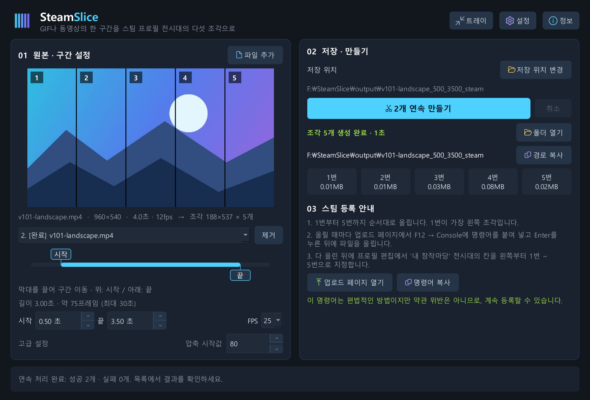

정확한 다섯 조각
16:9 원본은 188×537 크기의 조각 5개를 만듭니다. 다른 비율도 원본에 맞게 처리합니다. 재생 시간이 같아서 조각들이 서로 어긋나지 않습니다.
GIF나 동영상의 한 구간을 넣으면, 창작마당 전시대에 꼭 맞는 다섯 조각을 만들고 등록 방법까지 안내합니다.
Windows 10/11 x64 · v1.0.1
ZIP 전체를 풀고 실행하세요. bin 폴더가 함께 있어야 합니다. 설치 없이 사용할 수 있습니다.

자르기, 용량 맞추기, 올리는 순서까지 따로 챙길 필요가 없습니다.
16:9 원본은 188×537 크기의 조각 5개를 만듭니다. 다른 비율도 원본에 맞게 처리합니다. 재생 시간이 같아서 조각들이 서로 어긋나지 않습니다.
MP4, MKV, MOV, WebM 등의 동영상에서 원하는 구간을 골라 GIF로 만든 뒤에 바로 자릅니다. 4K 입력과 PQ·HLG HDR 색상 보정을 지원합니다.
조각 하나가 5MB를 넘으면 압축·색상·프레임 수를 순서대로 조정합니다. 다섯 조각에 같은 설정을 적용하고 총 재생 시간을 유지합니다.
프로그램 옆 output 폴더에서 다섯 조각을 확인하고, 업로드 페이지 열기와 명령어 복사 버튼을 이용해 직접 올립니다.
여러 GIF·동영상을 넣고 영상별 구간을 정해 순서대로 만듭니다. 파일별 결과를 확인하고, 취소해도 완료한 결과는 보존합니다.
밝은·어두운 테마를 고르고, 트레이로 최소화합니다. 다시 실행하면 기존 창이 복원되며 새 버전도 확인합니다.
파일 추가나 끌어다 놓기로 GIF·동영상을 넣습니다. 여러 파일도 함께 선택할 수 있습니다.
위쪽 시작·아래쪽 끝 손잡이로 구간을 고르고, 가운데 막대를 끌어 구간 전체를 이동합니다.
프로그램 옆 output 폴더에 저장합니다. 저장 위치를 바꿀 수도 있으며, 완료되면 폴더가 자동으로 열립니다.
등록 안내와 명령어 복사 버튼을 이용해 1번부터 5번까지 직접 올립니다. 조각을 끌어다 놓을 수도 있습니다.